Every generated SVG on both a dark and a light card, the way GitHub renders them. Animations run once per image load, so use replay to watch them again.
Regenerate with python scripts/radar.py …,
scripts/cards.py, scripts/banner/generate.py, then reload.





